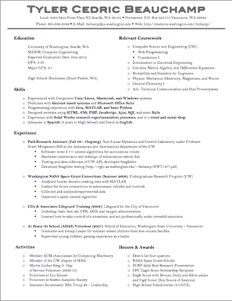
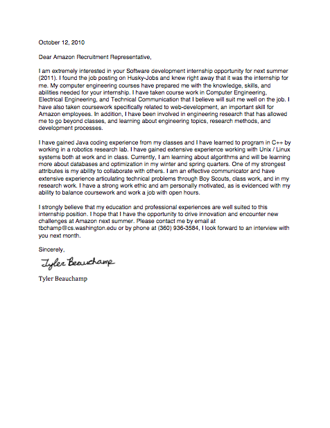
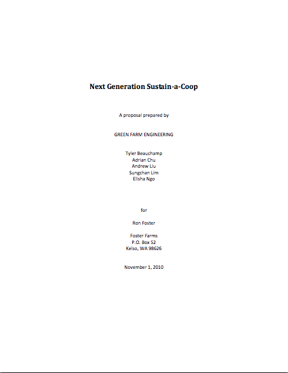
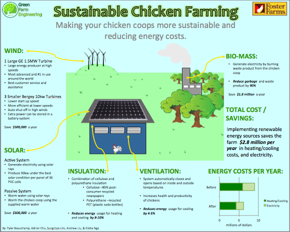
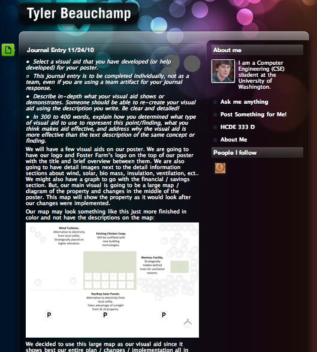

Introduction:
I am a Computer Engineering student at the University of Washington (Seattle). For more information about me see my main page. This is my portfolio for HCDE 333. It shows off the major projects that I worked on throughout this course.
Included below are five documents that I worked on throughout the quarter. While preparing these documents, I improved my writing style and learned a lot about the process required to complete professional documents. With each document, I outline its purpose, the process I went through to create it, and the outcome or experiences I gained from completing it. Included with each is also a screen shot which links to the full version of the document (in pdf format).
Resume: (top)
My resume has easily been the most used document I have prepared. I have since revised it more with help from Computer Science related employers, handed it out at several career fairs, and posted in online both within the Computer Science department and on my own webpage. Hopefully it will soon help me secure an internship opportunity and in the future help me to find a job with an industry leading company.
Process
I created my resume in Microsoft Word because it seamed like the best text and layout editor. I stared making this resume by looking at older resumes I had created in high school, for scholarships, and for a research position. I extracted what I thought were the most important parts and then looked at what I was missing. I updated things that had changed and added new information. Then I looked at examples and worked on a layout. It felt like putting together a puzzle except that you could change the shape of the pieces and didn't know what the end picture was. Through the process of arranging the parts of my resume I had to reword and reorder many parts. In the end I removed almost all of the sentences and went more with bulleted information.
Outcome
I am really glad I had this opportunity to really overhaul my resume before the big career fairs. I learned a lot about designing compact writing that can still deliver a lot of information. This resume will really help me secure a career and I will be able to reuse the skills that I learned to write future resumes and like professional documents.
Cover Letter: (top)
A cover letter is an important document anyone looking for a job must be ready to write. A cover letter unlike the resume is something that must be customized every time it is used. Having the knowledge of what one should include and having one that can be reworked is very helpful.
Process
Since the cover letter is just a text document, I used Microsoft Word, but I also used a drawing tablet I have to electronically sign the document since we turned it in electronically and I would not be able to physically sign it. While writing the letter, I mainly considered the description of the internship I was applying for. I paid attention to what the employer was looking for and tried to showcase the parts of my resume, in more detail, that met these goals. Length was also an important consideration when I was working on my letter, I didn't want it to be too short and therefore unnecessary nor too long and uninviting.
Outcome
What I gained from this experience was simply just the experience of writing the cover letter. I gained the ability to clearly communicate what job I want, why I want it, why I am the right person for the job, and why the employer should want me to do the job. Having this experience I am now so much better prepared to write a cover letter for a real job I will be applying for in the future. Writing good cover letters is a necessary skill and can help give you a bonus boost toward securing a job.
Written Proposal: (top)
The written proposal is really written for the benefit of the reader, mainly the client. In this case, ours was addressed to Foster Farms and addressed their lack of sustainability at one of their chicken coop facilities and how, if hired, we could construct a thorough plan to make their chicken coop 'green'.
Process
For this project we worked in groups so we mainly worked on Google docs to write the proposal together. We met originally to organize our ideas, make an outline, and break up the work evenly. We each wrote our detailed sections first then we each wrote some of the introduction and conclusion sections so that they would properly overview all of the details. Once we were finished we copied all the sections into a word document so that it could be properly formatted with a table of contents, page numbers, and other formatting that Google Docs could not do properly. One challenge that we encountered was that the table of contents would not auto-generate properly, no matter how we formatted the titles and generated it. In the end, we had to manually make the table of contents.
Outcome
The experience of writing this longer written proposal taught me a lot about both collaborating with a group and about writing a more detailed professional document. Both of these things I am going to have to do many more times in my engineering future. When writing a longer document with others you have to split up the work, but after writing the document someone must go over it and make sure that the style of writing and the formatting are consistent. You don't want it to be obvious to the reader that different people wrote different sections of the document. When writing large professional documents, I learned that there are special sections that are expected to be there such as the executive summary. Knowing how to write and what to include in a document like this will be a useful communications skill to have.
Poster: (top)
Our poster is a culmination of all the work we put into our sustainability project and it shows our final proposed plan. We developed it to showcase the elements of our project in a visual way to our client.
Process
We started the poster really on the drawing board. We talked together and drew out ideas that we thought of and discussed the good things about the designs and pointed out their flaws. We settled on using a diagram or map of the farm showing the changes we would make and discuss the details of our changes around the picture. We thought that the picture would be very large and interesting, show the main points clearly, and provide organization to the rest of the details. We made our poster in Microsoft PowerPoint since it allowed us to specify the size and layout specifically. One of my group members drew the map and we used those colors as the basis for our poster elements. We really considered font size and overall look when designing our poster. The in-class review was really helpful because it allowed us to step back and see our poster from others perspectives and get their opinions of how to make it better. One challenge we had to over come was limiting the amount of text by summarizing details and being concise.
Outcome
In engineering we often must create posters to show at fairs, symposiums, and other events. Often these posters are unorganized, cluttered, wordy, and boring. After this experience I hope that I will be able to create much more interesting and better-organized posters to share my engineering work. During this project I also learned a lot about designing a large visual with a group and how we must come to an agreement on the organization and details because everyone had different ideas.
Journal (Other): (top)
My journal was developed as a way to reflect upon parts of this class. It was also helpful to be able to look back on certain details later on, especially while working with a long-term group on a project. I used some posts to document pictures of our groups planning.
Process
For my journal I used a Tumblr online blog style account. This allowed me to be flexible in what I wrote and posted with my entries. It also allowed me to access it from anywhere and made it more professional looking than just writing in a notebook. For each of our required entries I answered a prompt we were given so I generally titled them with the corresponding date. But I also posted other pictures and entries that were related to the class. One problem that I encountered was when the Tumblr site encountered a server error and was not working for a few days, but eventually it was working again and I was able to access my entries. Technical problems must be anticipated whenever working with electronic systems.
Outcome
Before this I had never really kept a journal or academic log before. This showed me how easy and flexible writing and posting information could be. Often when working on projects in the past I wish that I could remember old details about other projects or about something I was working on, but had no record to look back on. By keeping a simple journal like this it is easy to look back and remember details especially with pictures. In a future engineering career I may need or wish to keep a log of accomplishments or just of handy things to remember and this experience will be valuable.